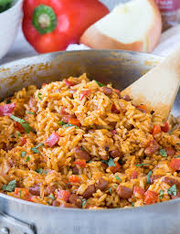
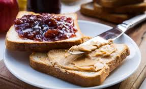

Food Show

Facts about College Nutrition
- It is important to establish healthy, long lasting nutritonal habits
- Unhealthy eating decisions can lead to worse academic performance and worse long-term health.
- Most college students do not eat enough fruit or vegetables.
- College Students need cheap and filling meals, but at the same time are full of nutrients. Examples include:

- 
- 
- While alcohol consumption is a part of college, it should happen in moderation so as to minimize the health detriments.
- Although exercise is important, diet is just as important for long term health, if not moreso
- Additional Information on a balanced diet can be found here on the NHS site!